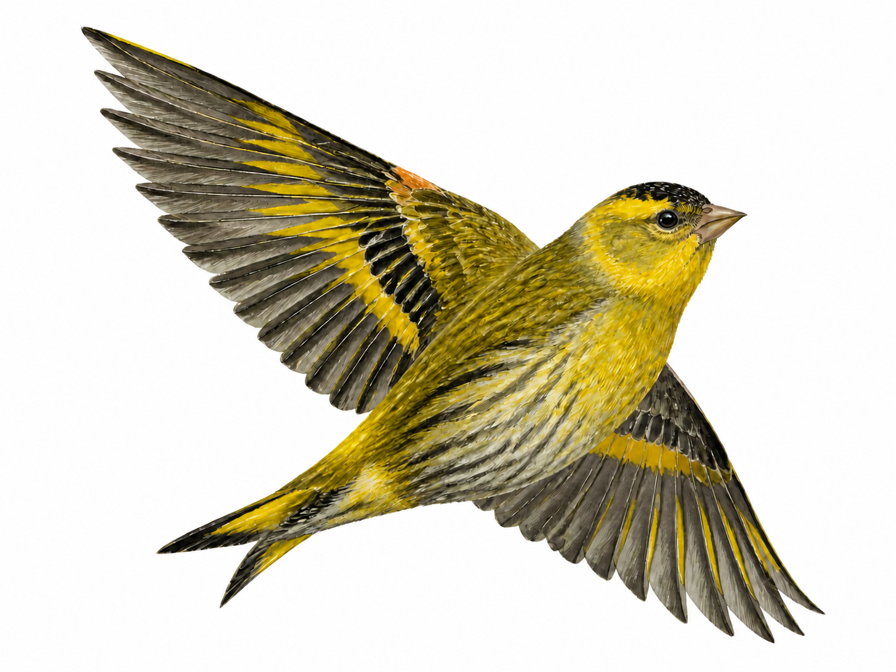

听见
辨认经验、语气和真正值得表达的部分。
ORGANIC CONTENT SYSTEM · 01
从真实经验里，
长出属于你的内容。
不从模板开始，也不急着制造更多。
先找到你已经拥有的判断、语气与故事。

02 · SOIL / 土壤
它来自你做过的事、见过的人、反复形成的判断，以及只有你会使用的表达方式。黄雀先整理这些真实材料，再决定内容应该长成什么。
03 · ROOTS / 根系
辨认经验、语气和真正值得表达的部分。
把零散念头组织成持续而清楚的内容路径。
让文字、图像、声音与视频围绕同一个故事展开。
让作品与反馈沉淀，成为下一次表达的养分。
04 · CANOPY / 枝叶
黄雀不是把不同工具堆在一起，而是让同一份理解进入不同媒介，保持语气、方向与节奏的一致。
05 · HUANGQUE AI